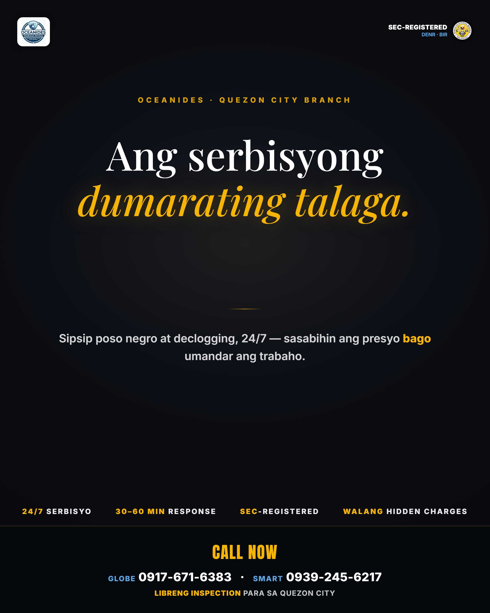
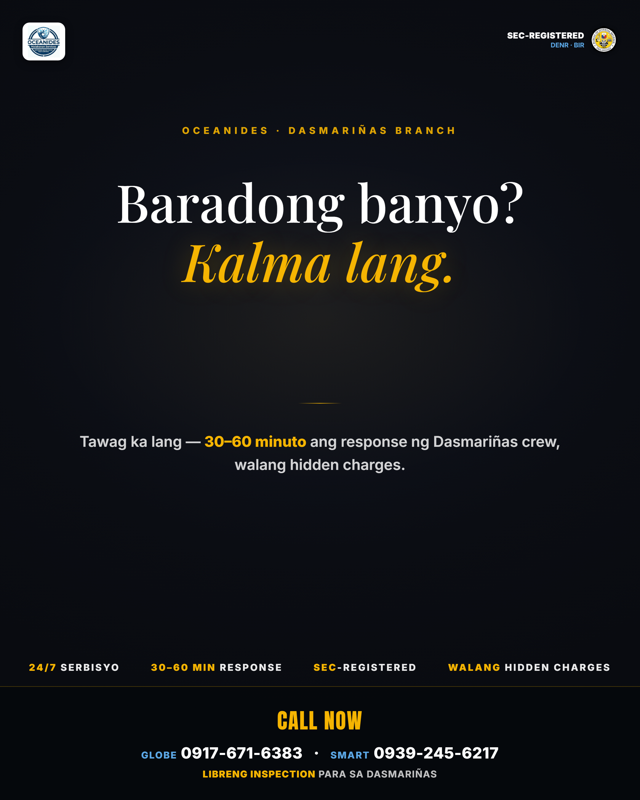

tb2-noir — Kallaway noir-editorial trial (2026-07-15)
Type-led noir variant: film grain + Playfair italic gold accent on near-black navy, no photo plate
(that's premium's lane). Trust furniture intact (SEC/DENR/BIR, stats, CTA bar).
PREVIEW-ONLY — sample copy, not from tb2-variants.json. To enter the daily rotation:
Neil approves, then add a noir copy pool (3 variants: HEADLINE + SUBLINE + CAPTION) to
tb2-variants.json and slot it into STYLE_PAIRS in build-tb2-cities.mjs.
Re-render previews: node preview-noir.mjs

Quezon City — "Ang serbisyong dumarating talaga."

Dasmariñas (long-name fit check) — "Baradong banyo? Kalma lang."